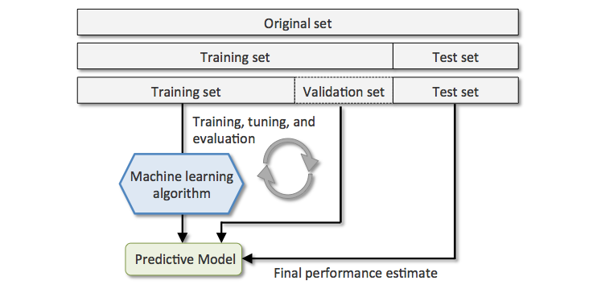

Assessing results
Contents
Assessing results¶
Environment setup¶
import platform
print(f"Python version: {platform.python_version()}")
assert platform.python_version_tuple() >= ("3", "6")
import numpy as np
import matplotlib.pyplot as plt
import seaborn as sns
print(f"NumPy version: {np.__version__}")
Python version: 3.7.5
NumPy version: 1.18.1
# Setup plots
%matplotlib inline
plt.rcParams["figure.figsize"] = 10, 8
%config InlineBackend.figure_format = 'retina'
sns.set()
import sklearn
print(f"scikit-learn version: {sklearn.__version__}")
assert sklearn.__version__ >= "0.22" # For plotting API
from sklearn.metrics import mean_absolute_error, mean_squared_error
from sklearn.linear_model import SGDClassifier
from sklearn.ensemble import RandomForestClassifier
from sklearn.metrics import (
accuracy_score,
precision_score,
recall_score,
plot_confusion_matrix,
classification_report,
plot_roc_curve,
)
from sklearn.model_selection import cross_val_score
scikit-learn version: 0.22.1
import tensorflow as tf
print(f"TensorFlow version: {tf.__version__}")
print(f"Keras version: {tf.keras.__version__}")
from tensorflow.keras.datasets import mnist
from tensorflow.keras.losses import (
BinaryCrossentropy,
CategoricalCrossentropy,
SparseCategoricalCrossentropy,
)
TensorFlow version: 2.3.1
Keras version: 2.4.0
Problem formulation¶
Model¶
The representation learnt from data during training is called a model. It defines the relationship between inputs and outputs, and thus produces results from data. Most (but not all) ML systems are model-based.

Model parameters and hypothesis function¶
\(\pmb{\theta}\) (sometime noted \(\pmb{\omega}\)): set of model’s internal parameters, updated during training.
\(h_\theta()\): model’s prediction function (hypothesis function), using the model parameters \(\pmb{\theta}\) to define the relationship between features and labels.
\(y'^{(i)}\) (sometimes noted \(\hat{y}^{(i)}\)): hypothesis function output (model prediction).
Loss¶
\(\mathcal{L_{\pmb{X, y}}(\pmb{\theta})}\), sometimes noted \(\mathcal{J_{\pmb{X, y}}(\pmb{\theta})}\): loss function that quantifies the difference, often called error, between expected results (called ground truth) and actual results computed by the model.
Also called cost or objective function.
During model training, the input dataset \(\pmb{X}\) and the expected results \(\pmb{y}\) can be treated as constants. The loss depends solely on the model parameters \(\pmb{\theta}\). To simplify notations, the loss function will be written \(\mathcal{L(\pmb{\theta})}\).
Common losses¶
Regression losses¶
Mean Absolute Error¶
Aka L1 norm.
Mean Squared Error¶
Aka squared L2 norm. Most sensible to outliers.
Root Mean Squared Error¶
The default choice in many contexts.
# Expected and actual results
y_true = [3, -0.5, 2, 7]
y_pred = [2.5, 0.0, 2, 8]
mae = mean_absolute_error(y_true, y_pred)
assert mae == (0.5 + 0.5 + 0 + 1) / 4
print(mae)
mse = mean_squared_error(y_true, y_pred)
assert mse == (0.5**2 + 0.5**2 + 0**2 + 1**2) / 4
print(mse)
rmse = np.sqrt(mse)
print(rmse)
0.5
0.375
0.6123724356957945
Classification losses¶
Binary classification¶
\(y^{(i)} \in \{0,1\}\): expected result for the \(i\)th data sample.
\(y'^{(i)} \in [0,1]\): model output for the \(i\)th data sample.
Binary crossentropy¶
# Plot -log(x) for x in ]0,1[
x = np.linspace(0.01, 0.99, 200)
plt.plot(x, -np.log(1 - x), label="Loss value when true label = 0")
plt.plot(x, -np.log(x), "r--", label="Loss value when true label = 1")
plt.xlabel("Predicted probability")
plt.ylabel("Loss value")
plt.legend(fontsize=16)
plt.show()
y_true = [0, 0, 1, 1]
bce_fn = BinaryCrossentropy()
y_pred = [0.1, 0.2, 0.7, 0.99]
bce = bce_fn(y_true, y_pred)
print(f"BCE (good prediction): {bce}")
# Compare expected and computed values
np.testing.assert_almost_equal(
-(np.log(0.9) + np.log(0.8) + np.log(0.7) + np.log(0.99)) / 4, bce
)
# Perfect prediction
y_pred = [0., 0., 1., 1.]
print(f"BCE (perfect prediction): {bce_fn(y_true, y_pred)}")
# Awful prediction
y_pred = [0.9, 0.85, 0.17, 0.05]
print(f"BCE (awful prediction): {bce_fn(y_true, y_pred)}")
BCE (good prediction): 0.17380718886852264
BCE (perfect prediction): 0.0
BCE (awful prediction): 2.241847515106201
Multiclass classification¶
\(K\): number of classes.
\(\pmb{y}^{(i)}\) (the ground truth for the ith data sample) can either be:
a discrete integer value equal to \(k \in \{0, K-1\}\), the sample’s class;
a binary vector of \(K\) values, typically obtained by one-hot encoding the targets. In that case, \(y^{(i)}_k\) is equal to 1 if the \(i\)th sample belongs to class \(k\), 0 otherwise.
\(\pmb{y}'^{(i)}\) is a vector of \(K\) values, computed by the model. It can either be:
a score vector of raw decimal values, also called a logit vector;
a probability distribution vector: in that case, \(y'^{(i)}_k\) represents the probability that the \(i\)th sample belongs to class \(k\).
Categorical Crossentropy¶
Aka log(istic) loss.
Expects one-hot encoded targets (binary vectors).
Equivalent to Binary Crossentropy when \(K = 2\).
# 3 possibles classes. Sample 1 has class 2. Sample 2 has class 3
y_true = [[0, 1, 0], [0, 0, 1]]
# Probability distribution vector
y_pred = [[0.05, 0.95, 0], [0.1, 0.8, 0.1]]
cce_fn = CategoricalCrossentropy()
cce = cce_fn(y_true, y_pred).numpy()
print(cce)
# Compare theorical and computed loss values
np.testing.assert_almost_equal(
-(np.log(0.95) + np.log(0.1)) / 2, cce
)
# Logit vector (for a different prediction)
y_pred = [[0.3, 0.9, -0.1], [0.27, 0.1, 0.78]]
cce_fn = CategoricalCrossentropy(from_logits=True)
cce_logits = cce_fn(y_true, y_pred).numpy()
print(cce_logits)
1.1769392
0.6979594
Sparse categorical crossentropy¶
Variation of Categorical Crossentropy that expects non-encoded, discrete integer targets.
# Same classes as before, this time expressed as integers
y_true = [1, 2]
# Probability distribution vector
y_pred = [[0.05, 0.95, 0], [0.1, 0.8, 0.1]]
scce_fn = SparseCategoricalCrossentropy()
scce = scce_fn(y_true, y_pred).numpy()
print(scce)
# Since classes and predictions are identical as before, loss values should be equal
assert scce == cce
# Logit vector (for a different prediction)
y_pred = [[0.3, 0.9, -0.1], [0.27, 0.1, 0.78]]
scce_fn = SparseCategoricalCrossentropy(from_logits=True)
scce_logits = scce_fn(y_true, y_pred).numpy()
print(scce_logits)
# Since classes and predictions are identical as before, loss values should be equal
assert scce_logits == cce_logits
1.1769392
0.6979594
Model evaluation¶
Using a validation set¶
In order to evaluate and tune model performance without involving the test dataset, training data is often split between a training set and a smaller validation set.

Cross-validation¶
A more sophisticated validation strategy is to apply K-fold cross validation. Training data is randomly split into \(K\) subsets called folds. The model is trained and evaluated \(K\) times, using a different fold for validation.

Performance metrics¶
(Heavily inspired by Chapter 3 of Hands-On Machine Learning by Aurélien Géron)
Regression metrics¶
A typical performance metric for regression tasks is the Root Mean Square Error.
MAE (less sensitive to outliers) and MSE can also be used.
Classification metrics¶
Context: recognizing handwritten digits¶
# Load the MNIST digits dataset
(train_images, train_labels), (test_images, test_labels) = mnist.load_data()
print(f"Training images: {train_images.shape}. Training labels: {train_labels.shape}")
print(f"Test images: {test_images.shape}. Test labels: {test_labels.shape}")
Training images: (60000, 28, 28). Training labels: (60000,)
Test images: (10000, 28, 28). Test labels: (10000,)
# Plot the first 10 digits
with sns.axes_style("white"): # Temporary hide Seaborn grid lines
plt.figure(figsize=(10, 5))
for i in range(10):
digit = train_images[i]
fig = plt.subplot(2, 5, i + 1)
plt.imshow(digit, cmap=plt.cm.binary)

# Reshape images into a (samples, 28x28) matrix
x_train = train_images.reshape((60000, 28 * 28))
x_test = test_images.reshape((10000, 28 * 28))
# 784=28x28
print(f"x_train: {x_train.shape}")
print(f"x_test: {x_test.shape}")
x_train: (60000, 784)
x_test: (10000, 784)
# Rescale pixel values from [0,255] to [0,1]
x_train = x_train / 255.0
# Alternative: x_train = x_train.astype("float32") / 255
x_test = x_test / 255.0
# Alternative: x_test = x_test.astype("float32") / 255
# Print the first 10 labels
print(train_labels[:10])
[5 0 4 1 9 2 1 3 1 4]
# Create binary vectors of expected results
# label is true for all 5s, false for all other digits
y_train_5 = train_labels == 5
y_test_5 = test_labels == 5
# true, false, false
print(y_train_5[0], y_train_5[1], y_train_5[2])
True False False
# Create a classifier using stochastic gradient descent and log loss
sgd_model = SGDClassifier(loss="log")
# Trains the model on data
sgd_model.fit(x_train, y_train_5)
SGDClassifier(alpha=0.0001, average=False, class_weight=None,
early_stopping=False, epsilon=0.1, eta0=0.0, fit_intercept=True,
l1_ratio=0.15, learning_rate='optimal', loss='log', max_iter=1000,
n_iter_no_change=5, n_jobs=None, penalty='l2', power_t=0.5,
random_state=None, shuffle=True, tol=0.001,
validation_fraction=0.1, verbose=0, warm_start=False)
# Test on first 3 digits
samples = [x_train[0], x_train[1], x_train[2]]
# Print binary predictions (5/not 5)
print(sgd_model.predict(samples))
# Print prediction probabilities
sgd_model.predict_proba(samples).round(decimals=3)
[ True False False]
array([[0.163, 0.837],
[0.999, 0.001],
[1. , 0. ]])
Thresholding model output¶
The model outputs probabilities, or scores that are transformed into probabilities. These decimal values are thresholded into discrete values to form the model’s prediction.
Thresholds are problem-dependent.
Accuracy¶
A simple evaluation metric for classification is accuracy.
# Define ground truth and prediction vectors
y_true = [2, 0, 2, 2, 0, 1]
y_pred = [0, 1, 2, 2, 0, 1]
# Compute accuracy
acc = accuracy_score(y_true, y_pred)
print(f"Accuracy: {acc:.5f}")
assert acc == 4/6
Accuracy: 0.66667
# The score() method computes accuracy for SGDClassifier
train_acc = sgd_model.score(x_train, y_train_5)
print(f"Training accuracy: {train_acc:.05f}")
# Compare expected and computed values
assert train_acc == np.sum([sgd_model.predict(x_train) == y_train_5]) / len(x_train)
# Using cross-validation to evaluate accuracy, using 3 folds
cv_acc = cross_val_score(sgd_model, x_train, y_train_5, cv=3, scoring="accuracy")
print(f"CV accuracy: {cv_acc}")
Training accuracy: 0.97487
CV accuracy: [0.97085 0.9709 0.97165]
Accuracy shortcomings¶
When the dataset is skewed (some classes are more frequent than others), computing accuracy is not enough to assert the model’s performance.
To find out why, let’s imagine a dumb binary classifier that always predicts that the digit is not 5.
not5_count = (y_train_5 == False).sum()
print(f"There are {not5_count} digits other than 5 in the training set")
dumb_model_acc = not5_count / len(x_train)
print(f"Dumb classifier accuracy: {dumb_model_acc:.05f}")
There are 54579 digits other than 5 in the training set
Dumb classifier accuracy: 0.90965
True/False positives and negatives¶
True Positive (TP): the model correctly predicts the positive class.
False Positive (FP): the model incorrectly predicts the positive class.
True Negative (TN): the model correctly predicts the negative class.
False Negative (FN): the model incorrectly predicts the negative class.
Confusion matrix¶
Useful representation of classification results. Row are actual classes, columns are predicted classes.
# Plot the confusion matrix for a model and a dataset
def plot_conf_mat(model, x, y):
with sns.axes_style("white"): # Temporary hide Seaborn grid lines
display = plot_confusion_matrix(
model, x, y, values_format="d", cmap=plt.cm.Blues
)
# Plot confusion matrix for the SGD classifier
plot_conf_mat(sgd_model, x_train, y_train_5)
Precision and recall¶
Precision: proportion of positive identifications that were actually correct.
Recall (or sensitivity): proportion of actual positives that were identified correctly.
# Define ground truth and prediction vectors
y_true = [True, False, False, True, True, True]
y_pred = [True, True, False, True, False, False]
# Compute precision
precision = precision_score(y_true, y_pred, average=None)
print(f"Precision: {precision}")
# False class: 1 TP, 2 FP. True class: 2 TP, 1 FP
np.testing.assert_array_equal([1/3, 2/3], precision)
# Compute recall
recall = recall_score(y_true, y_pred, average=None)
print(f"Recall: {recall}")
# False class: 1 TP, 1 FN. True class: 2 TP, 2 TN
np.testing.assert_array_equal([1/2, 1/2], recall)
Precision: [0.33333333 0.66666667]
Recall: [0.5 0.5]
Example: a (flawed) tumor classifier¶
Context: binary classification of tumors (positive means malignant). Dataset of 100 tumors, of which 9 are malignant.
Negatives |
Positives |
|---|---|
True Negatives: 90 |
False Positives: 1 |
False Negatives: 8 |
True Positives: 1 |
F1 score¶
Weighted average (harmonic mean) of precision and recall.
Also known as balanced F-score or F-measure.
Favors classifiers that have similar precision and recall.
# Using scikit-learn to compute several metrics about the SGD classifier
print(classification_report(y_train_5, sgd_model.predict(x_train)))
precision recall f1-score support
False 0.98 0.99 0.99 54579
True 0.89 0.83 0.86 5421
accuracy 0.97 60000
macro avg 0.94 0.91 0.92 60000
weighted avg 0.97 0.97 0.97 60000
ROC curve and AUROC¶
ROC stands for “Receiver Operating Characteristic”.
A ROC curve plots TPR vs. FPR at different classification thresholds.
AUC or more precisely AUROC (“Area Under the ROC Curve”) provides an aggregate measure of performance across all possible classification thresholds.

# Plot ROC curve for the SGD classifier
sgd_disp = plot_roc_curve(sgd_model, x_train, y_train_5)
plt.show()
# Training a Random Forest classifier on same dataset
rf_model = RandomForestClassifier(n_estimators=50)
rf_model.fit(x_train, y_train_5)
# Plot ROC curves for both classifiers
ax = plt.gca()
rf_disp = plot_roc_curve(rf_model, x_train, y_train_5, ax=ax, alpha=0.8)
sgd_disp.plot(ax=ax, alpha=0.8)
plt.show()
Multiclass classification¶
# Using all digits in the datasets
y_train = train_labels
y_test = test_labels
# Training a SGD classifier to recognize all digits, not just 5s
multi_sgd_model = SGDClassifier(loss="log")
multi_sgd_model.fit(x_train, y_train)
# Since dataset is not class imbalanced anymore, accuracy is a reliable metric
print(f"Training accuracy: {multi_sgd_model.score(x_train, y_train):.05f}")
print(f"Test accuracy: {multi_sgd_model.score(x_test, y_test):.05f}")
Training accuracy: 0.91933
Test accuracy: 0.91540
# Plot confusion matrix for multiclass SGD classifier on test data
plot_conf_mat(multi_sgd_model, x_test, y_test)
# Using scikit-learn to compute several metrics about the multiclass SGD classifier
print(classification_report(y_test, multi_sgd_model.predict(x_test)))
precision recall f1-score support
0 0.92 0.98 0.95 980
1 0.96 0.98 0.97 1135
2 0.94 0.88 0.91 1032
3 0.91 0.90 0.91 1010
4 0.89 0.95 0.92 982
5 0.89 0.86 0.88 892
6 0.94 0.94 0.94 958
7 0.89 0.94 0.92 1028
8 0.88 0.85 0.86 974
9 0.92 0.85 0.88 1009
accuracy 0.92 10000
macro avg 0.91 0.91 0.91 10000
weighted avg 0.92 0.92 0.91 10000